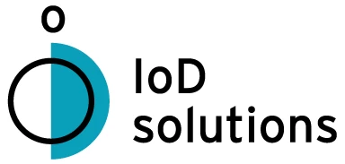

L'Entreprise

IoD Solutions est un cabinet de conseil et de développement nantais, fondé en 2019, spécialisé en Data et Intelligence Artificielle. Sa mission principale est d'accompagner les PME et ETI, notamment du secteur industriel, dans la transformation de leurs données brutes en véritables leviers de performance et d'aide à la décision.
Pour cela, l'entreprise propose des solutions sur mesure, allant du conseil stratégique à la conception d'outils d'IA, tout en assurant la formation des équipes métiers pour garantir leur autonomie.
Mon Experience
Ce stage a été le pont parfait entre mes connaissances théoriques et les exigences du monde professionnel. Sur cette page, je vous propose un aperçu des différentes tâches et responsabilités que j'ai eues l'occasion de prendre en charge. Vous découvrirez comment j'ai pu mettre en pratique mes compétences, en acquérir de nouvelles et contribuer concrètement aux objectifs de IoD
Bilan
Mon stage chez IoD Solution fut une expérience dense et formatrice. J'ai mené en autonomie deux projets d'IA innovants : un démonstrateur de staging virtuel et un système de réponse aux appels d'offres s'appuyant sur le modèle Gemini et une architecture RAG.
En plus des compétences techniques pointues, j'ai appris à gérer un projet de bout en bout et à collaborer avec différents profils. Cette immersion m'a conforté dans mon choix de carrière en intelligence artificielle et m'a donné des bases solides pour l'avenir.
A Propos
Je m'appelle Guillaume Antier, étudiant en informatique à Ynov Campus Nantes. Je maîtrise le développement back-end et les API avec Laravel, la programmation en Python et Go, les bases de données (PostgreSQL, MariaDB, MongoDB) et le front-end avec React.
J'aime relever des défis techniques et apprendre de nouvelles compétences pour toujours améliorer la qualité de mon travail.
Mon Intégration
Dès mon arrivée chez IoD Solutions, j'ai été accueilli dans une équipe bienveillante et dynamique. Les premières semaines ont été consacrées à comprendre l'environnement de travail, les processus de l'entreprise et à me familiariser avec les outils et technologies utilisés.
J'ai rapidement été impliqué dans des projets concrets, ce qui m'a permis de monter en compétences tout en apportant ma contribution aux objectifs de l'équipe.
Technologies Utilisées
Durant mon stage, j'ai eu l'opportunité de travailler avec un large éventail de technologies modernes :
- Python pour le développement d'applications IA
- Frameworks de Machine Learning (TensorFlow, PyTorch)
- Architecture RAG (Retrieval-Augmented Generation)
- API Gemini de Google
- Docker pour la conteneurisation
- Git pour le versioning
Cette diversité technologique m'a permis d'élargir considérablement mon champ de compétences.
Projet 1 : Démonstrateur de Staging Virtuel
Mon premier projet consistait à développer un démonstrateur de staging virtuel utilisant l'intelligence artificielle. L'objectif était de créer un outil permettant de visualiser et de modifier virtuellement des espaces.
J'ai conçu l'architecture complète du système, implémenté les algorithmes de traitement d'image et développé l'interface utilisateur. Ce projet m'a permis de travailler en autonomie tout en recevant des retours réguliers de l'équipe.
Projet 2 : Système de Réponse aux Appels d'Offres
Le second projet majeur était un système intelligent de réponse aux appels d'offres. En utilisant le modèle Gemini et une architecture RAG, j'ai développé une solution capable d'analyser des documents complexes et de générer des réponses pertinentes et personnalisées.
Ce projet m'a confronté à des défis techniques importants, notamment l'optimisation des requêtes, la gestion de grandes quantités de données et l'intégration d'API externes.
Mes Difficultés
Comme tout parcours d'apprentissage, j'ai rencontré plusieurs défis durant mon stage :
La complexité de l'architecture RAG était nouvelle pour moi. J'ai dû investir du temps personnel pour approfondir mes connaissances à travers de la documentation et des formations en ligne.
La gestion de projet en autonomie a nécessité une organisation rigoureuse. J'ai appris à mieux structurer mon travail et à communiquer efficacement sur mon avancement.
Ces difficultés m'ont permis de développer ma résilience et ma capacité d'adaptation.
Retour au Menu Principal
Cliquez sur "Retour" dans le menu de droite pour revenir à la liste principale des sections.